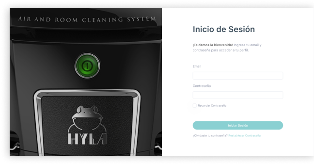

Product discovery en Hyla Chile
Cómo el Product Discovery ayudó a Hyla Chile para comenzar a hacer un producto digital exitoso.
Cómo el Product Discovery ayudó a Hyla Chile para comenzar a hacer un producto digital exitoso.
La empresa Hyla Chile, líder de venta de sistema de limpieza de aire y habitaciones (aspiradoras gama alta), buscaba digitalizar su proceso de control de ventas, clientes y manejo de stock en terreno para poder así mejorar su gestión operacional.
Este artículo muestra cómo nuestro servicio Product Discovery ayudó a Hyla Chile a su proceso de transformación digital y lograr encontrar la solución correcta para su necesidad.
Hyla Chile se puso en contacto con Aureolab para apoyarlos en el proceso de digitalización de su compañía. Actualmente, esta empresa cuenta con más 20 personas en planta y 300 vendedores externos a lo largo de sus 3 oficinas en Chile: Santiago, Antofagasta y Concepción, en donde el manejo actual de estructura de stock y comisiones se seguía utilizando de forma manual; con base de datos en planillas de Excel, comunicaciones por WhatsApp y correo electrónico, sin tener una estructura clara de la información y poco registro de la operación completa.
Para poder crear la solución o producto adecuado para Hyla Chile, lo primero fue entender y revisar el contexto general del negocio y bajar los outcomes esperados, es decir, aquellos resultados buscados para el beneficio del negocio. Luego, y como proceso clave de nuestro Product Discovery, el modelamiento del proceso de negocio (BPM) ayudó aterrizar el “cómo se hacen las cosas” actualmente, este proceso dio una mirada globalizada a todos los actores del negocio y ayudó a ilustrar aquellas carencias que antes no se lograban ver. Con esta información, fuimos capaces de entender y guiar la necesidad real de Hyla, no era simplemente digitalizar su proceso actual, si no simplificar el cómo se trabaja hoy en día: reducir procesos, disminuir horas de trabajo destinada a una misma función, bajar la merma en stock y muchos beneficios reflejados finalmente en mayor productividad y menores costos para la organización.

A través de la consultoría de Product Discovery, logramos entender qué parte de la empresa debe ser digitalizada con desarrollo de software a medida y que parte del negocio puede ser solucionada con software de mercado SaaS, para enfocar bien la inversión de recursos.
Actualmente el desarrollo se encuentra en la etapa de PMV, en donde el equipo de Hyla Chile es partícipe de todo el proceso, visualizando constantemente como los requerimientos se ven reflejados en el software final y entendiendo que la puesta en marcha va a significar un antes y un después en su manera de trabajar.
Desde el comienzo de este proceso, nos enfocamos en entender las necesidades y los desafíos de Hyla Chile, sin el product discovery, no hubiésemos sido capaces de entender los objetivos reales, y muy probablemente el proyecto hubiese fracasado en su etapa de desarrollo. Nuestra estrategia, visión y expertis es crear productos y servicios que realmente aportan valor a las compañía con las cuales trabajamos, poniendo gran énfasis en las etapas tempranas de nuestro método, para reducir errores y porcentaje de fracasos de desarrollo, común en la mayoría de los proyectos.
Si quieres conocer más acerca de nuestro Product Discovery ¡Conversemos! Constanza@aureolab.cl
Tambien te puede interesar :
¿Cómo hacer un análisis heurístico a nuestros contenidos? Es una pregunta que más de alguna vez nos hemos planteado, en especial dentro de una disciplina en desarrollo y crecimiento como lo es el UX Content.
Leer más
¿Cómo hacer un análisis heurístico a nuestros contenidos? Es una pregunta que más de alguna vez nos hemos planteado, en especial dentro de una disciplina en desarrollo y crecimiento como lo es el UX Content.
Leer más